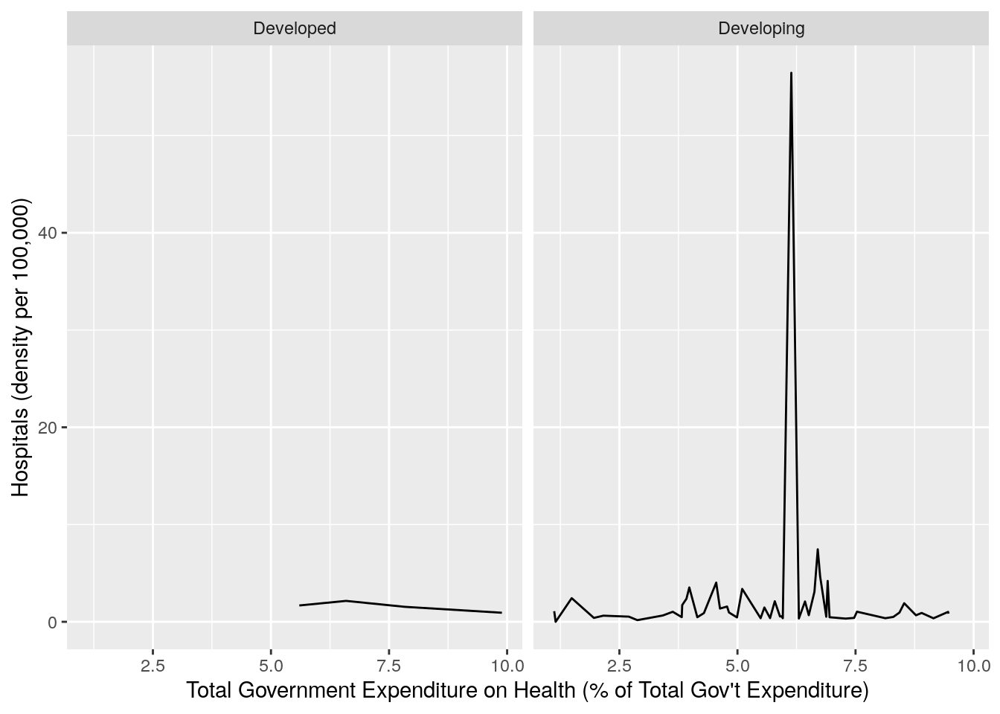
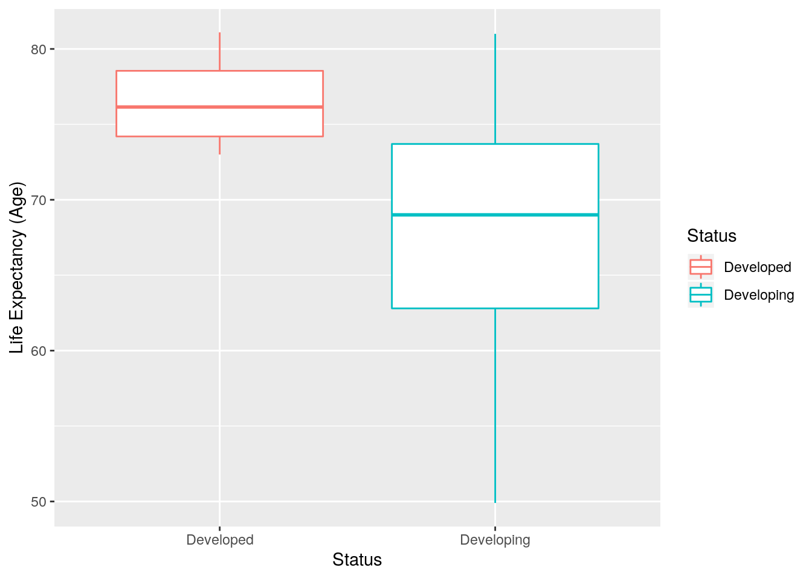
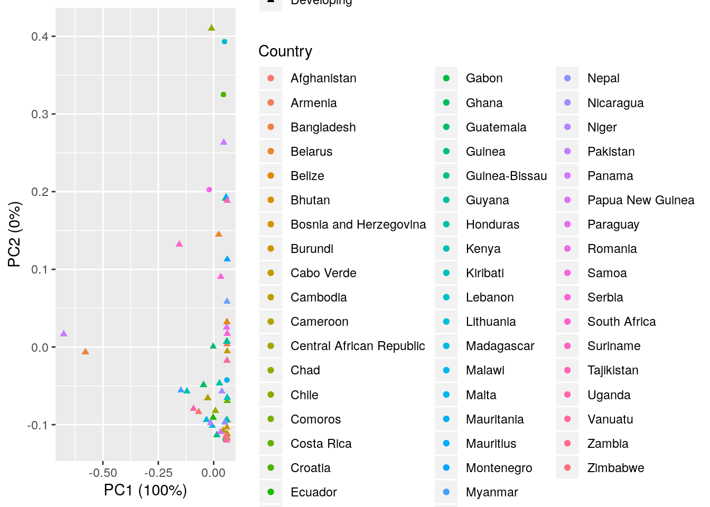

This is an R Markdown document. Markdown is a simple formatting syntax for authoring HTML, PDF, and MS Word documents. For more details on using R Markdown see http://rmarkdown.rstudio.com.
When you click the Knit button a document will be generated that includes both content as well as the output of any embedded R code chunks within the document. You can embed an R code chunk like this:
For this project, I chose to look at health data between some developing and developed countries. I want to be a doctor in the future and I’m interested in health disparities. The two datasets contain health stats such as life expectancy and adult mortality and then other stats such as spending on health infrastructure. I believe findings will fit the expectations that developign countries will tend to have lower life expectancies and spending on healthcare. For developed countries, healthcare spending should be greater, thus people should have access to better healthcare and overall should have better health statistics. I would also expect developed countries to be more hospital dense since the resources are there to build more hospitals.
life <- read.csv(file = "Life Expectancy Data.csv")
health <- read.csv(file = "Health Infrastructure Dataset.csv")
head(health)## Country Year Total.density.per.100.000.population..Health.posts
## 1 Afghanistan 2013 2.95
## 2 Albania 2013 13.08
## 3 Antigua and Barbuda 2013 NA
## 4 Armenia 2013 8.00
## 5 Azerbaijan 2013 NA
## 6 Bahamas 2013 39.75
## Total.density.per.100.000.population..Health.centres
## 1 1.22
## 2 NA
## 3 NA
## 4 0.54
## 5 7.44
## 6 0.00
## Total.density.per.100.000.population..District.rural.hospitals
## 1 0.18
## 2 0.72
## 3 NA
## 4 1.81
## 5 5.31
## 6 0.00
## Total.density.per.100.000.population..Provincial.hospitals
## 1 0.10
## 2 0.35
## 3 NA
## 4 1.58
## 5 2.12
## 6 0.79
## Total.density.per.100.000.population..Specialized.hospitals
## 1 0.09
## 2 0.28
## 3 1.11
## 4 0.64
## 5 0.53
## 6 0.26
## Total.density.per.100.000.population..Hospitals
## 1 0.37
## 2 1.36
## 3 1.11
## 4 4.03
## 5 7.97
## 6 1.06The health dataset contains the number of hospitals of different types per 100,00 people.
head(life)## Country Year Status Life.expectancy Adult.Mortality
## 1 Afghanistan 2013 Developing 59.9 268
## 2 Albania 2013 Developing 77.2 84
## 3 Algeria 2013 Developing 75.3 112
## 4 Angola 2013 Developing 51.1 355
## 5 Antigua and Barbuda 2013 Developing 76.1 133
## 6 Argentina 2013 Developing 76.0 119
## infant.deaths Alcohol percentage.expenditure Hepatitis.B Measles BMI
## 1 66 0.01 73.21924 64 430 18.1
## 2 0 4.76 430.87698 99 0 56.5
## 3 21 0.53 544.45074 95 25 57.2
## 4 69 8.10 35.95857 77 8523 22.1
## 5 0 8.58 1991.43037 99 0 46.4
## 6 8 8.28 1001.79633 94 0 61.6
## under.five.deaths Polio Total.expenditure Diphtheria HIV.AIDS GDP
## 1 89 62 8.13 64 0.1 631.7450
## 2 1 99 5.66 99 0.1 4414.7231
## 3 24 95 7.12 95 0.1 5471.8668
## 4 105 67 4.26 77 2.3 484.6169
## 5 0 98 5.33 99 0.2 12224.8642
## 6 10 99 4.99 94 0.1 12976.6364
## Population thinness..1.19.years thinness.5.9.years
## 1 31731688 17.7 17.7
## 2 289592 1.3 1.4
## 3 38338562 5.9 5.8
## 4 2599834 8.6 8.5
## 5 NA 3.3 3.3
## 6 42539925 1.0 0.9
## Income.composition.of.resources Schooling
## 1 0.470 9.9
## 2 0.759 14.2
## 3 0.737 14.4
## 4 0.523 11.4
## 5 0.781 13.9
## 6 0.823 17.3The life dataset contains many health-related statistics for particular countries during 2013.
data <- full_join(life, health, by="Country")## Warning: Column `Country` joining factors with different levels, coercing to
## character vectordata <- data %>%
na.omit() %>%
rename(Year = Year.x) %>%
rename("Life Expectancy (Age)" = Life.expectancy) %>%
rename("Adult Mortality (per 1000)" = Adult.Mortality) %>%
rename("Infant Deaths (per 1000)" = infant.deaths) %>%
rename("Percentage Expenditure on Health (% of GDP)" = percentage.expenditure) %>%
rename("Under-5 Deaths (per 1000)" = under.five.deaths) %>%
rename("Total Government Expenditure on Health (% of Total Gov't Expenditure)"= Total.expenditure) %>%
rename("GDP (in USD)" = GDP) %>%
rename("Hospitals (density per 100,000)" = Total.density.per.100.000.population..Hospitals) %>%
rename("Specialty Hospitals (density per 100,000" = Total.density.per.100.000.population..Specialized.hospitals) %>%
select(-c("Year.y", "Alcohol", "Hepatitis.B", "Measles", "Polio", "Diphtheria", "HIV.AIDS", "thinness..1.19.years", "thinness.5.9.years", "Income.composition.of.resources", "Schooling", "Total.density.per.100.000.population..Health.posts", "Total.density.per.100.000.population..Health.centres", "Total.density.per.100.000.population..District.rural.hospitals", "Total.density.per.100.000.population..Provincial.hospitals"))
head(data)## Country Year Status Life Expectancy (Age) Adult Mortality (per 1000)
## 1 Afghanistan 2013 Developing 59.9 268
## 7 Armenia 2013 Developing 74.4 123
## 13 Bangladesh 2013 Developing 71.0 135
## 15 Belarus 2013 Developing 71.7 23
## 17 Belize 2013 Developing 69.8 18
## 19 Bhutan 2013 Developing 69.1 219
## Infant Deaths (per 1000) Percentage Expenditure on Health (% of GDP) BMI
## 1 66 73.21924 18.1
## 7 1 279.42908 53.3
## 13 104 52.82986 17.0
## 15 0 1109.85462 61.1
## 17 0 629.20186 49.3
## 19 0 19.79057 22.7
## Under-5 Deaths (per 1000)
## 1 89
## 7 1
## 13 130
## 15 1
## 17 0
## 19 1
## Total Government Expenditure on Health (% of Total Gov't Expenditure)
## 1 8.13
## 7 4.55
## 13 2.88
## 15 6.70
## 17 5.79
## 19 3.83
## GDP (in USD) Population Specialty Hospitals (density per 100,000
## 1 631.7450 31731688 0.09
## 7 3843.5912 289359 0.64
## 13 951.8895 157571292 0.04
## 15 7978.8254 9465997 0.55
## 17 4688.5384 344181 0.60
## 19 235.8829 764961 0.13
## Hospitals (density per 100,000)
## 1 0.37
## 7 4.03
## 13 0.17
## 15 7.45
## 17 2.11
## 19 1.72Here a full join was ran to combine the datasets based on country. Some statistics were unavailable thus countries with NAs were omitted. 84 countries were dropped from the health dataset and 138 countries were dropped from the life dataset. Some of the category titles were then renamed to either provide more information or just look nicer. Lastly some columns were dropped as they weren’t relevant to the data I wante to explore.
data_longer <- data %>%
pivot_longer(c("Life Expectancy (Age)", "Adult Mortality (per 1000)"), names_to = "age", values_to = "stat")
head(data_longer)## # A tibble: 6 x 14
## Country Year Status `Infant Deaths … `Percentage Exp… BMI `Under-5 Deaths…
## <chr> <int> <fct> <int> <dbl> <dbl> <int>
## 1 Afghan… 2013 Devel… 66 73.2 18.1 89
## 2 Afghan… 2013 Devel… 66 73.2 18.1 89
## 3 Armenia 2013 Devel… 1 279. 53.3 1
## 4 Armenia 2013 Devel… 1 279. 53.3 1
## 5 Bangla… 2013 Devel… 104 52.8 17 130
## 6 Bangla… 2013 Devel… 104 52.8 17 130
## # … with 7 more variables: `Total Government Expenditure on Health (% of Total
## # Gov't Expenditure)` <dbl>, `GDP (in USD)` <dbl>, Population <dbl>,
## # `Specialty Hospitals (density per 100,000` <dbl>, `Hospitals (density per
## # 100,000)` <dbl>, age <chr>, stat <dbl>Pivot_longer was ran to bring adult mortality and life expectancy into one column. This was performed just to demonstrate knowledge of the function. This was then reversed using pivot_wider in the next r chunk.
data_wider <- data_longer %>%
pivot_wider(names_from = "age", values_from = "stat")
head(data_wider)## # A tibble: 6 x 14
## Country Year Status `Infant Deaths … `Percentage Exp… BMI `Under-5 Deaths…
## <chr> <int> <fct> <int> <dbl> <dbl> <int>
## 1 Afghan… 2013 Devel… 66 73.2 18.1 89
## 2 Armenia 2013 Devel… 1 279. 53.3 1
## 3 Bangla… 2013 Devel… 104 52.8 17 130
## 4 Belarus 2013 Devel… 0 1110. 61.1 1
## 5 Belize 2013 Devel… 0 629. 49.3 0
## 6 Bhutan 2013 Devel… 0 19.8 22.7 1
## # … with 7 more variables: `Total Government Expenditure on Health (% of Total
## # Gov't Expenditure)` <dbl>, `GDP (in USD)` <dbl>, Population <dbl>,
## # `Specialty Hospitals (density per 100,000` <dbl>, `Hospitals (density per
## # 100,000)` <dbl>, `Life Expectancy (Age)` <dbl>, `Adult Mortality (per
## # 1000)` <dbl>data %>%
filter(Status == "Developing") %>%
head()## Country Year Status Life Expectancy (Age) Adult Mortality (per 1000)
## 1 Afghanistan 2013 Developing 59.9 268
## 2 Armenia 2013 Developing 74.4 123
## 3 Bangladesh 2013 Developing 71.0 135
## 4 Belarus 2013 Developing 71.7 23
## 5 Belize 2013 Developing 69.8 18
## 6 Bhutan 2013 Developing 69.1 219
## Infant Deaths (per 1000) Percentage Expenditure on Health (% of GDP) BMI
## 1 66 73.21924 18.1
## 2 1 279.42908 53.3
## 3 104 52.82986 17.0
## 4 0 1109.85462 61.1
## 5 0 629.20186 49.3
## 6 0 19.79057 22.7
## Under-5 Deaths (per 1000)
## 1 89
## 2 1
## 3 130
## 4 1
## 5 0
## 6 1
## Total Government Expenditure on Health (% of Total Gov't Expenditure)
## 1 8.13
## 2 4.55
## 3 2.88
## 4 6.70
## 5 5.79
## 6 3.83
## GDP (in USD) Population Specialty Hospitals (density per 100,000
## 1 631.7450 31731688 0.09
## 2 3843.5912 289359 0.64
## 3 951.8895 157571292 0.04
## 4 7978.8254 9465997 0.55
## 5 4688.5384 344181 0.60
## 6 235.8829 764961 0.13
## Hospitals (density per 100,000)
## 1 0.37
## 2 4.03
## 3 0.17
## 4 7.45
## 5 2.11
## 6 1.72To demonstrate knowledge of the filter function, all the devloping countries were filtered through. There are 51 developing countries in the dataset and 4 developed countries.
data %>%
select(Country, Status, `Total Government Expenditure on Health (% of Total Gov't Expenditure)`) %>%
group_by(Status) %>%
arrange(desc(`Total Government Expenditure on Health (% of Total Gov't Expenditure)`)) %>%
head()## # A tibble: 6 x 3
## # Groups: Status [2]
## Country Status `Total Government Expenditure on Health (% of Tot…
## <chr> <fct> <dbl>
## 1 Malta Developed 9.89
## 2 Costa Rica Developi… 9.47
## 3 Bosnia and Herze… Developi… 9.46
## 4 Honduras Developi… 9.15
## 5 Panama Developi… 8.9
## 6 South Africa Developi… 8.78To further explore the data, I wanted to see how developing countries compared to developed countries on the total amount the government spends on health as a percent of the total government expenditure. Malta, a developed country, had the highest % expenditure on health at 9.89%. Suprisingly though, other developing countries were ahead of developed countries like Croatia and Lithuania. It should be noted that many of the fully developed countries like US and Australia weren’t included in this project.
data %>%
mutate("Adult Mortality (per 100,000)" = `Adult Mortality (per 1000)`/100) %>%
arrange(`Adult Mortality (per 100,000)`) %>%
head()## Country Year Status Life Expectancy (Age)
## 1 Bosnia and Herzegovina 2013 Developing 77.0
## 2 Cabo Verde 2013 Developing 72.8
## 3 Honduras 2013 Developing 74.3
## 4 Belize 2013 Developing 69.8
## 5 Montenegro 2013 Developing 75.8
## 6 Kiribati 2013 Developing 65.8
## Adult Mortality (per 1000) Infant Deaths (per 1000)
## 1 9 0
## 2 12 0
## 3 15 4
## 4 18 0
## 5 19 0
## 6 22 0
## Percentage Expenditure on Health (% of GDP) BMI Under-5 Deaths (per 1000)
## 1 75.61063 54.7 0
## 2 325.62986 29.7 0
## 3 311.75532 49.3 4
## 4 629.20186 49.3 0
## 5 707.14469 6.7 0
## 6 137.25919 76.7 0
## Total Government Expenditure on Health (% of Total Gov't Expenditure)
## 1 9.46
## 2 4.29
## 3 9.15
## 4 5.79
## 5 6.43
## 6 1.15
## GDP (in USD) Population Specialty Hospitals (density per 100,000
## 1 535.8655 364999 0.13
## 2 3558.7963 5216 0.40
## 3 2136.7739 8657785 0.09
## 4 4688.5384 344181 0.60
## 5 7186.4298 62127 0.16
## 6 1724.3617 18535 0.00
## Hospitals (density per 100,000) Adult Mortality (per 100,000)
## 1 1.02 0.09
## 2 1.00 0.12
## 3 0.36 0.15
## 4 2.11 0.18
## 5 2.09 0.19
## 6 0.00 0.22To demonstrate knowledge of the mutate function, the adult mortality propotion was converted to out of 100,000 people instead of 1000. The smallest adult mortality rate was 0.09 per 100,000 people which belonged to Bosnia and Herzegovina, a developing country. This is interesting as one would think it would belong to a developed country.
data %>%
group_by(Status) %>%
summarise(mean_Hospitals = mean(`Hospitals (density per 100,000)`), mean_life = mean(`Life Expectancy (Age)`), sd_life = sd(`Life Expectancy (Age)`), mean_AM = mean(`Adult Mortality (per 1000)`), mean_ID = mean(`Infant Deaths (per 1000)`), mean_BMI = mean(`BMI`), mean_Exp = mean(`Total Government Expenditure on Health (% of Total Gov't Expenditure)`), sd_Exp = sd(`Total Government Expenditure on Health (% of Total Gov't Expenditure)`), mean_SpHosp = mean(`Specialty Hospitals (density per 100,000`))## # A tibble: 2 x 10
## Status mean_Hospitals mean_life sd_life mean_AM mean_ID mean_BMI mean_Exp
## <fct> <dbl> <dbl> <dbl> <dbl> <dbl> <dbl> <dbl>
## 1 Devel… 1.58 76.6 3.58 118. 0.5 63.0 7.48
## 2 Devel… 2.43 67.8 7.10 178. 23.7 36.5 5.60
## # … with 2 more variables: sd_Exp <dbl>, mean_SpHosp <dbl>The mean and standard deviation statistics were calculated for the developed and developing countries for comparison for many of the variables. Unsurprisingly, the developed countries had higher life expectancies and lower adult mortality rates. However, too some surprise developing countries had on average more hospitals per 100,000 people and lower BMI. This could possibly be explained by transportation and daily life practices which would be interesting to look at for future study. Developed countries tend to have better roads and transportation allowing for travel over greater distance while in developing countries bike and walking are still fairly common modes of transportation meaning hospitals need to be closer. Developing countries tend to be more manual labor intensive leading to lower BMI.
data %>%
select_if(is.numeric) %>%
cor()## Warning in cor(.): the standard deviation is zero## Year
## Year 1
## Life Expectancy (Age) NA
## Adult Mortality (per 1000) NA
## Infant Deaths (per 1000) NA
## Percentage Expenditure on Health (% of GDP) NA
## BMI NA
## Under-5 Deaths (per 1000) NA
## Total Government Expenditure on Health (% of Total Gov't Expenditure) NA
## GDP (in USD) NA
## Population NA
## Specialty Hospitals (density per 100,000 NA
## Hospitals (density per 100,000) NA
## Life Expectancy (Age)
## Year NA
## Life Expectancy (Age) 1.00000000
## Adult Mortality (per 1000) -0.66594717
## Infant Deaths (per 1000) -0.23471775
## Percentage Expenditure on Health (% of GDP) 0.55916225
## BMI 0.65713940
## Under-5 Deaths (per 1000) -0.27225912
## Total Government Expenditure on Health (% of Total Gov't Expenditure) 0.37063653
## GDP (in USD) 0.51118789
## Population -0.08537216
## Specialty Hospitals (density per 100,000 -0.17275038
## Hospitals (density per 100,000) -0.15276180
## Adult Mortality (per 1000)
## Year NA
## Life Expectancy (Age) -0.66594717
## Adult Mortality (per 1000) 1.00000000
## Infant Deaths (per 1000) 0.16915408
## Percentage Expenditure on Health (% of GDP) -0.24286013
## BMI -0.43156225
## Under-5 Deaths (per 1000) 0.20514458
## Total Government Expenditure on Health (% of Total Gov't Expenditure) -0.12127725
## GDP (in USD) -0.22029792
## Population 0.06828933
## Specialty Hospitals (density per 100,000 0.10734963
## Hospitals (density per 100,000) 0.08551256
## Infant Deaths (per 1000)
## Year NA
## Life Expectancy (Age) -0.23471775
## Adult Mortality (per 1000) 0.16915408
## Infant Deaths (per 1000) 1.00000000
## Percentage Expenditure on Health (% of GDP) -0.23701490
## BMI -0.34920715
## Under-5 Deaths (per 1000) 0.99644758
## Total Government Expenditure on Health (% of Total Gov't Expenditure) -0.23485883
## GDP (in USD) -0.22839111
## Population 0.87489135
## Specialty Hospitals (density per 100,000 -0.06086307
## Hospitals (density per 100,000) -0.08850694
## Percentage Expenditure on Health (% of GDP)
## Year NA
## Life Expectancy (Age) 0.55916225
## Adult Mortality (per 1000) -0.24286013
## Infant Deaths (per 1000) -0.23701490
## Percentage Expenditure on Health (% of GDP) 1.00000000
## BMI 0.54694493
## Under-5 Deaths (per 1000) -0.25978406
## Total Government Expenditure on Health (% of Total Gov't Expenditure) 0.27483062
## GDP (in USD) 0.94397242
## Population -0.13277640
## Specialty Hospitals (density per 100,000 -0.07761300
## Hospitals (density per 100,000) -0.06446802
## BMI
## Year NA
## Life Expectancy (Age) 0.65713940
## Adult Mortality (per 1000) -0.43156225
## Infant Deaths (per 1000) -0.34920715
## Percentage Expenditure on Health (% of GDP) 0.54694493
## BMI 1.00000000
## Under-5 Deaths (per 1000) -0.38428332
## Total Government Expenditure on Health (% of Total Gov't Expenditure) 0.23306086
## GDP (in USD) 0.49027390
## Population -0.27168729
## Specialty Hospitals (density per 100,000 -0.06885069
## Hospitals (density per 100,000) -0.03192290
## Under-5 Deaths (per 1000)
## Year NA
## Life Expectancy (Age) -0.27225912
## Adult Mortality (per 1000) 0.20514458
## Infant Deaths (per 1000) 0.99644758
## Percentage Expenditure on Health (% of GDP) -0.25978406
## BMI -0.38428332
## Under-5 Deaths (per 1000) 1.00000000
## Total Government Expenditure on Health (% of Total Gov't Expenditure) -0.23950682
## GDP (in USD) -0.25147696
## Population 0.86451007
## Specialty Hospitals (density per 100,000 -0.06457958
## Hospitals (density per 100,000) -0.09385691
## Total Government Expenditure on Health (% of Total Gov't Expenditure)
## Year NA
## Life Expectancy (Age) 0.37063653
## Adult Mortality (per 1000) -0.12127725
## Infant Deaths (per 1000) -0.23485883
## Percentage Expenditure on Health (% of GDP) 0.27483062
## BMI 0.23306086
## Under-5 Deaths (per 1000) -0.23950682
## Total Government Expenditure on Health (% of Total Gov't Expenditure) 1.00000000
## GDP (in USD) 0.16814113
## Population -0.24967939
## Specialty Hospitals (density per 100,000 0.02960272
## Hospitals (density per 100,000) 0.02927900
## GDP (in USD)
## Year NA
## Life Expectancy (Age) 0.51118789
## Adult Mortality (per 1000) -0.22029792
## Infant Deaths (per 1000) -0.22839111
## Percentage Expenditure on Health (% of GDP) 0.94397242
## BMI 0.49027390
## Under-5 Deaths (per 1000) -0.25147696
## Total Government Expenditure on Health (% of Total Gov't Expenditure) 0.16814113
## GDP (in USD) 1.00000000
## Population -0.12976867
## Specialty Hospitals (density per 100,000 -0.08654211
## Hospitals (density per 100,000) -0.06220488
## Population
## Year NA
## Life Expectancy (Age) -0.08537216
## Adult Mortality (per 1000) 0.06828933
## Infant Deaths (per 1000) 0.87489135
## Percentage Expenditure on Health (% of GDP) -0.13277640
## BMI -0.27168729
## Under-5 Deaths (per 1000) 0.86451007
## Total Government Expenditure on Health (% of Total Gov't Expenditure) -0.24967939
## GDP (in USD) -0.12976867
## Population 1.00000000
## Specialty Hospitals (density per 100,000 -0.06688972
## Hospitals (density per 100,000) -0.09527588
## Specialty Hospitals (density per 100,000
## Year NA
## Life Expectancy (Age) -0.17275038
## Adult Mortality (per 1000) 0.10734963
## Infant Deaths (per 1000) -0.06086307
## Percentage Expenditure on Health (% of GDP) -0.07761300
## BMI -0.06885069
## Under-5 Deaths (per 1000) -0.06457958
## Total Government Expenditure on Health (% of Total Gov't Expenditure) 0.02960272
## GDP (in USD) -0.08654211
## Population -0.06688972
## Specialty Hospitals (density per 100,000 1.00000000
## Hospitals (density per 100,000) 0.98736275
## Hospitals (density per 100,000)
## Year NA
## Life Expectancy (Age) -0.15276180
## Adult Mortality (per 1000) 0.08551256
## Infant Deaths (per 1000) -0.08850694
## Percentage Expenditure on Health (% of GDP) -0.06446802
## BMI -0.03192290
## Under-5 Deaths (per 1000) -0.09385691
## Total Government Expenditure on Health (% of Total Gov't Expenditure) 0.02927900
## GDP (in USD) -0.06220488
## Population -0.09527588
## Specialty Hospitals (density per 100,000 0.98736275
## Hospitals (density per 100,000) 1.00000000A correlation matrix was ran to show how different variables correlated with each other. Most correlations were pretty weak. A strong one to no surpise was GDP and % of GDP spent on health. Life expectancy had decent correlations with both % GDP spent on health and BMI which is unsurprising really. As more money spent on health means better healthcare leading to a longer life span.
data %>%
ggplot(aes(`Total Government Expenditure on Health (% of Total Gov't Expenditure)`, `Hospitals (density per 100,000)`)) +
geom_line(stat = "summary") +
facet_wrap(~Status)## No summary function supplied, defaulting to `mean_se()
## No summary function supplied, defaulting to `mean_se()
A line plot is shown to show the difference in hospital density between developing and developed countries. It is shown as a function of total government expenditure on health. Developing countries have a lot of variance which makes since as more variables come into play. These include things such as corruption, land availabilty, conflicts, and many others. Developed countries tend to be very stable as shown in the graph.
data %>%
ggplot(aes(x = Status, y = `Life Expectancy (Age)`)) +
geom_boxplot(aes(color = Status))
Boxplots were made to show the difference in life expectancy between developend and developing countries. As discussed earlier, developed countries have the higher life excepctancy to no surprise. Developing countries had a lot more variance due to many other issues presented in developing countries.
install.packages("ggfortify")## Installing package into '/stor/home/mth2244/R/x86_64-pc-linux-gnu-library/3.4'
## (as 'lib' is unspecified)library(ggfortify)
data_PCA <- data %>%
select(c(4:14))
autoplot(prcomp(data_PCA), data = data, colour = "Country", shape = "Status")
A PCA plot shows clusters based on similarity. Here many of the developing countries are shown to be clustered together. Most of the developed countries are outliers except 1. Triangles respresent developing countries and circles are developed countries. Thus, the developed country similar to the developing countries is Malta. This would be interesting to look at for further exploration. It’s possible that Malta is just small, so data compares to that of larger developing countries or maybe there is something else going on.